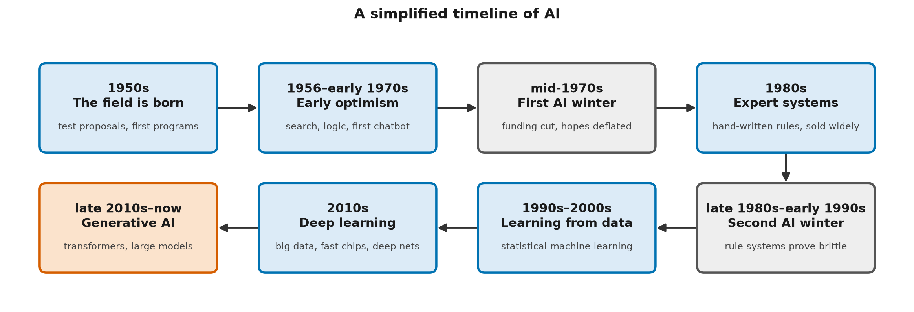

A Short History: From Rules to Generative Models
Learning objectives
By the end you will be able to:
- Describe the main eras of AI, from the 1950s to generative AI, and what drove each one.
- Explain what an AI winter was and why two of them happened.
- Identify the three ingredients behind modern progress: algorithms, data and computation.
- Implement (or run) a 1948-style statistical text generator and explain how it connects to modern language models.
Why this matters
History is the best protection against hype, in both directions. Every era of AI produced confident predictions that machines would soon match people, and every era also produced experts who declared the approach a dead end. Some of those "dead ends", such as neural networks, became the foundation of today's systems. Knowing the pattern helps you judge new claims calmly: ask what actually works today, what it depends on, and what history says about extrapolating.
🟢 Core idea (everyone)
The big picture

AI moved through waves of progress separated by two "AI winters"; the dates of the winters are approximate.
An AI winter is a period when funding, interest and progress in AI fall sharply, usually after early promises go unmet. The term borrows from the seasons.
An analogy. Think of a new technology like a gold rush. News of early finds brings a rush of people and money. When the easy gold runs out and the hard rock remains, most leave. A few keep digging, and sometimes find a richer seam years later.
Where the analogy breaks down: gold doesn't get easier to find over time. In AI, the "hard rock" often softened by itself: computers got faster and data got more plentiful, so ideas that failed in one decade worked in a later one. And unlike seasons, winters aren't guaranteed to repeat. They're a pattern in history, not a law of nature.
1950s: the field is born
In 1950, Alan Turing published Computing Machinery and Intelligence, which asked "Can machines think?" and proposed replacing that vague question with a test, now called the Turing test: can a machine hold a text conversation that an interrogator can't tell apart from a person's?
In 1955, John McCarthy, Marvin Minsky, Nathaniel Rochester and Claude Shannon wrote the proposal for a 1956 summer workshop at Dartmouth College. That proposal coined the term "artificial intelligence". It confidently suggested that significant progress could be made in a single summer by a small group of scientists. That optimism set the tone for decades.
1956 to the early 1970s: early optimism
Early programs proved theorems in logic, solved algebra problems and played checkers. Two landmarks matter for this catalog:
- The perceptron (1958). Frank Rosenblatt's perceptron was an early learning machine built from artificial neurons (simple units that combine their inputs into one output), with a single trainable layer. It learned from examples: a distant ancestor of today's neural networks.
- ELIZA (1966). Joseph Weizenbaum's ELIZA was an early chatbot: a program that converses in text. It matched patterns in what the user typed and filled in templates ("Tell me more about your family"). It understood nothing, yet some users became emotionally attached to it. Weizenbaum himself became a critic of over-trusting machines.
In 1969, Minsky and Seymour Papert's book Perceptrons showed mathematically that a single-layer perceptron can't learn some simple patterns. Interest in neural networks fell sharply afterwards. How much the book caused that decline, rather than reflected it, is still debated by historians.
The mid-1970s: the first AI winter
Early programs worked on small, tidy problems but didn't scale to messy real-world ones. In the UK, the 1973 Lighthill report criticized the field's failure to meet its promises, and UK government funding was cut sharply. Funding agencies in the United States also cut back on open-ended AI research. Progress continued, but slowly and with less money.
The 1980s: expert systems
AI came back as expert systems: programs that captured a specialist's knowledge as hundreds or thousands of hand-written "if… then…" rules. MYCIN, a 1970s research system at Stanford, recommended antibiotic treatments for serious bacterial infections. In the 1980s, companies built and sold expert systems widely, and governments funded large AI programs again, including Japan's Fifth Generation Computer Systems project, launched in 1982.
The late 1980s to the early 1990s: the second AI winter
Expert systems proved brittle: they failed badly on any case their rules didn't anticipate, and updating thousands of rules was expensive. The market for specialized AI hardware collapsed around 1987, as ordinary desktop computers caught up. Funding and interest fell again.
The 1990s and 2000s: learning from data
The field shifted from writing rules to learning them. Statistical machine learning methods became standard for tasks like spam filtering, speech recognition and web search. For much of this period, other statistical methods beat neural networks on most tasks, and many researchers set neural networks aside: their second fall from favour. Research on them continued, though. In 1986, David Rumelhart, Geoffrey Hinton and Ronald Williams popularized backpropagation, the method still used to train neural networks: it works out how much each parameter contributed to an error, so each one can be adjusted to reduce it (Level 1 teaches it). Earlier versions of the idea existed. By the late 1980s, Yann LeCun and colleagues were using neural networks to read handwritten digits on postal mail.
In 1997, a chess computer called Deep Blue beat the world champion, Garry Kasparov. It relied mainly on fast search and a scoring function designed largely by people, not on learning from data in the modern sense.
The 2010s: deep learning
Three ingredients came together:
- Data. The internet made huge datasets possible. ImageNet (2009) had millions of labelled images.
- Computation. Graphics processing units (GPUs), chips designed for video games, turned out to be very good at the arithmetic neural networks need.
- Algorithms. Better training techniques made networks with many layers practical.
In 2012, a deep neural network won the ImageNet image-recognition competition by a large margin. That result, often called the AlexNet moment, convinced much of the field to switch to deep learning. In 2016, a Go-playing system that combined deep learning with search defeated Lee Sedol, one of the world's strongest players: a milestone many experts had expected to take considerably longer.
The late 2010s to now: generative AI
- 2013–2014: new kinds of generative models (variational autoencoders and generative adversarial networks) learned to generate new images. Early results were small and blurry; quality improved quickly over the following years.
- 2017: the paper Attention Is All You Need introduced the transformer, a neural network design built around a mechanism called attention: a way for the model to weigh how much each earlier word matters when predicting the next. As of November 2026, it's the basis of nearly all large language models. Level 2 builds one.
- 2018–2020: researchers trained ever-larger transformers on ever more text, and found that performance improved predictably with scale: more parameters, data and computation.
- 2020–2022: diffusion models rapidly improved image generation, and by 2022 could produce high-quality images from text descriptions. Training with human feedback made language models far better at following instructions.
- November 2022: a free public chat interface to a large language model drew a mass audience. For many people, that was their first encounter with generative AI.
A worked example: text from statistics, in 1948
The idea of generating text from statistics is older than the computers that now do it. In his 1948 paper A Mathematical Theory of Communication, Claude Shannon produced English-like text by choosing each letter at random, using the frequencies of letters in real English. Then he used the frequency of each letter given the previous one, then the previous two, and then did the same with whole words. The more context, the more English-like the result. He did this without a computer: for the higher-order examples, he used an ordinary book, opening it at random and reading on until the current letters appeared, then taking the letter that came next.
This lesson's code repeats the experiment on a 152-word passage about the fictional town of Brindlewick, going one step further than Shannon's printed examples (4 letters of context). Here's what it produced:
| Context used | Generated text |
|---|---|
| none, all letters equally likely | nglbunkzvfhadm uawecjnxxdyiwuubyazbfqr bo omcdkenavuxn qgazi |
| none, letters by frequency | no atshhaitesl p rou cv seien isc estnsdcadronsenntarstoo |
| 1 previous letter | balo meun crs mofisicke fo rethocle t wnd thay d fe are o g |
| 2 previous letters | brary closeum in tre is town the rive muses the the of hast |
| 4 previous letters | brindlewick is wound by hand everyone the library open to ca |
| none, words by frequency | market museum stops of the on the every in the |
| 1 previous word | brindlewick is closed to everyone who arrive by train can walk to |
Each step uses the same recipe, predict the next piece from the pieces before it, with more context. That's exactly the recipe of a modern language model. The difference is scale and sophistication: as of November 2026, large language models condition on many thousands of previous tokens (pieces of text, see L0-01) and learn from trillions of them, using neural networks instead of frequency tables.
🟡 How it works (practitioner)
Recreating Shannon's approximations
code/shannon_approximations.py uses only the standard library. Run it from this lesson's folder:
python code/shannon_approximations.py
The core of the letter generator counts, for every run of context letters, which letter came
next and how often. It then samples from those counts:
follows = defaultdict(Counter)
for i in range(len(text) - context):
follows[text[i:i + context]][text[i + context]] += 1
For example, with 2 letters of context, follows["th"] might be {"e": 18, " ": 2, ...}, so
after "th" the generator picks "e" most of the time. rng.choices(symbols, weights) then
picks the next letter with probability proportional to its count. This is the same move as
L0-01's word generator: count what follows what, then sample.
Each line of the output adds context, and you can watch the text become more English-like: real words appear with 2 letters of context, and whole phrases with 4.
Reading history like an engineer
The timeline can look like a story of steady genius. It's more useful to read it as a series of bottlenecks:
| Era | What limited progress | What unlocked the next step |
|---|---|---|
| Symbolic AI | Real-world knowledge is too large and messy to write as rules | Learning rules from data |
| Early neural networks | Training many layers didn't work well; too little data and computation | Backpropagation, large datasets, GPUs |
| Deep learning | Each task needed its own labelled dataset | Self-supervised training on huge unlabelled text |
| Generative AI | Cost of computation, data quality, reliability | Still being worked out |
Common pitfalls
- Assuming progress is steady. It has come in jumps, separated by plateaus.
- Treating history as hero stories. Most breakthroughs had earlier versions, and depended on hardware and data that the inventors didn't control.
- Copying old predictions into new contexts. "Human-level AI in 20 years" has been predicted repeatedly since the 1950s. Treat new timelines with the same caution.
🔴 Going deeper (expert)
The three ingredients, and their interaction
Modern progress is usually attributed to algorithms, data and computation. They don't act independently. The transformer replaced step-by-step recurrence with attention, which processes all positions of a sequence in parallel. That made it a much better fit for GPUs than earlier sequence models. So an algorithmic change unlocked more effective use of available computation, which in turn made training on far larger datasets practical. L2-04 to L2-08 explain why.
Why counting tables hit a wall: data sparsity
Shannon-style generators are n-gram models: they predict the next symbol from counts of the previous n-1 symbols. Their weakness is arithmetic. With 27 symbols (26 letters and a space), there are 27^k possible contexts of length k: 531,441 for k = 4, and about 2.8 \times 10^{11} for k = 8. Any real text covers a vanishing fraction of them. In this lesson's 777-character passage:
| Context length k | Possible contexts (27^k) | Distinct contexts that occur | Share with only one possible next letter |
|---|---|---|---|
| 2 | 729 | 164 | 49% |
| 4 | 531,441 | 497 | 89% |
| 6 | about 3.9 \times 10^{8} | 636 | 96% |
| 8 | about 2.8 \times 10^{11} | 710 | 98% |
With long contexts, nearly every context has been seen once, with exactly one continuation. The model can only recite (the exercise below shows this). With short contexts, it has plenty of statistics but too little context to make sense. Real text is so varied that this tension doesn't go away with more data: most long contexts in any new sentence have never been seen before.
Statistical language modelling spent decades on partial fixes, such as smoothing methods that borrow probability from shorter contexts. The lasting fix was to stop treating each context as a separate row in a table. Neural language models represent words and contexts as vectors of learned numbers, so similar contexts share what they've learned, even when an exact context has never been seen. Bengio and colleagues made this argument in 2003. L1-10 builds a small model of that kind, and L2-02 explains the vectors, called embeddings.
Scale, and the "bitter lesson"
In a widely read 2019 essay, The Bitter Lesson, Richard Sutton argued that across 70 years of AI research, general methods that make better use of more computation (search and learning) eventually beat methods that build in human knowledge. The success of large language models is often cited in support.
Open debate (as of November 2026): how far scale alone can go is contested. Some researchers expect continued gains from more computation and data. Others point to limits: available high-quality data, cost and energy, and persistent failures in reasoning and reliability, and argue new ideas are needed. Level 2 (scaling laws) and Level 7 (reasoning models, alternative architectures) present the evidence on both sides.
Why the history keeps repeating
Winters followed a common pattern: impressive demonstrations on narrow problems, extrapolated into broad promises; then the gap between demonstration and dependable real-world use became visible, and funding fell. The gap is the important part. Today's generative systems are far more useful than expert systems ever were, and they're used by vastly more people. But the same gap shows up in a new form: fluent output that is unreliable in ways that are hard to predict. Much of Levels 4–6 of this catalog is about engineering that gap closed.
A note on sources
This summary simplifies a contested history. Dates of the winters vary between accounts, and the causes (funding policy, technical limits, hardware markets, individual reports) are weighted differently by different historians. For a fuller picture, read the primary sources and histories in Further reading.
Common misconceptions
- Myth: AI was invented recently. Reality: The term dates from 1955. Neural networks, chatbots and statistical text generation all date from the 1940s to the 1960s.
- Myth: Neural networks were always the obvious way forward. Reality: They fell out of favour twice. For long periods, most researchers thought other approaches were more promising.
- Myth: The chess win in 1997 was an early triumph of machine learning. Reality: It mainly used fast search and hand-tuned evaluation, which is symbolic AI.
- Myth: Generative AI started in 2022. Reality: 2022 was when it reached a mass audience. The research behind it built up over the preceding decade, and statistical text generation goes back to 1948.
Hands-on exercise
Goal: see what happens when the letter generator gets more context than the 4 letters used above, and connect it to a real issue with large models.
Open exercises/more_context.py, complete longest_copied_run(), and
run it for 2, 6, 8 and 12 letters of context. Before running, predict: will the text get better,
worse, or something else?
Solution
The full solution is in exercises/solutions/more_context.py:
2 letters of context: brain thas halk a museves a librarket on the rives crosseum
longest copied run: 10 of 60 characters
6 letters of context: brindlewick is a small town council meets on the east bank o
longest copied run: 28 of 60 characters
8 letters of context: brindlewick is a small town on the east bank of the river as
longest copied run: 60 of 60 characters
12 letters of context: brindlewick is a small town on the east bank of the river as
longest copied run: 60 of 60 characters
With 8 or more letters of context, the generator copies the source word for word. In a 152-word text, almost every 8-letter context appears only once, so there's only one possible next letter. The model has memorized the text rather than learned general patterns. Large models can do this too, especially with text they saw many times, which is why memorization is a privacy and copyright concern (Level 6).
Check your understanding
- Which pairing best matches the causes of the two AI winters?
A. The mid-1970s winter followed the failure of early systems to scale to real-world problems, with critical reviews such as the 1973 Lighthill report and cuts in funding. The winter from the late 1980s followed the expert-system boom: rule systems broke on cases they didn't anticipate, and the market for specialized AI hardware collapsed around 1987. B mixes up the eras (ImageNet came in 2009, long after both winters), and C overstates hardware's role.
- Which developments helped make deep learning succeed in the 2010s? (choose all that apply)
A, B, D. Data, computation and algorithms together. C describes the 1980s expert-system approach, which deep learning moved away from.
- Which order is correct, from earliest to latest?
B. The perceptron came in 1958, the expert-systems boom in the 1980s, the ImageNet win in 2012 and the transformer in 2017. The pattern to remember: learning from data (the perceptron) came early, fell out of favour while hand-written rules had their turn, and returned at scale.
- In the worked example, why does the text become more English-like as the context grows from 0 to 4 letters?Did your answer cover the main points?
With more previous letters to condition on, the generator's choices reflect more of the real structure of English: which letters follow which, then common syllables, then whole words. It's still just sampling from counts, but the counts capture longer patterns. Modern language models apply the same principle with far more context and learned representations instead of counts.
- Explain it to a colleague: a colleague says, "AI has been overhyped before, so this wave will collapse too." Give a balanced response using what you learned.Did your answer cover the main points?
History does show repeated cycles of over-promising followed by winters, so skepticism about bold timelines is reasonable. But this wave differs in that the technology is already in wide, everyday use by the general public, which was never true of expert systems. The sensible position is to judge specific claims by what works reliably today, and to expect some predictions to fail without assuming the whole field will.
Key terms
Further reading
- 🟢 Computing Machinery and Intelligence — A. M. Turing (1950). Mind, 59(236), 433–460. Very readable, and still thought-provoking. The origin of the imitation game. https://doi.org/10.1093/mind/LIX.236.433
- 🟢 A Proposal for the Dartmouth Summer Research Project on Artificial Intelligence — J. McCarthy, M. L. Minsky, N. Rochester and C. E. Shannon (1955). The short proposal that named the field.
- 🟡 A Mathematical Theory of Communication — C. E. Shannon (1948). Bell System Technical Journal. Section 3 contains the text approximations this lesson recreates. https://doi.org/10.1002/j.1538-7305.1948.tb01338.x
- 🟡 The Bitter Lesson — Richard Sutton (2019). A short essay on why general methods that use computation tend to win. http://www.incompleteideas.net/IncIdeas/BitterLesson.html
- 🔴 Attention Is All You Need — Vaswani et al. (2017). The paper that introduced the transformer. https://arxiv.org/abs/1706.03762
- 🔴 Artificial Intelligence: A Modern Approach — Russell and Norvig (4th ed., 2020). Chapter 1 includes a careful history of the field.
Next
- Next lesson: L0-04 Capabilities, Limits and Responsible Use: A First Look
- Related: L1-06 builds a trained version of this lesson's generator. L2-04 explains the attention mechanism that the transformer is built around.